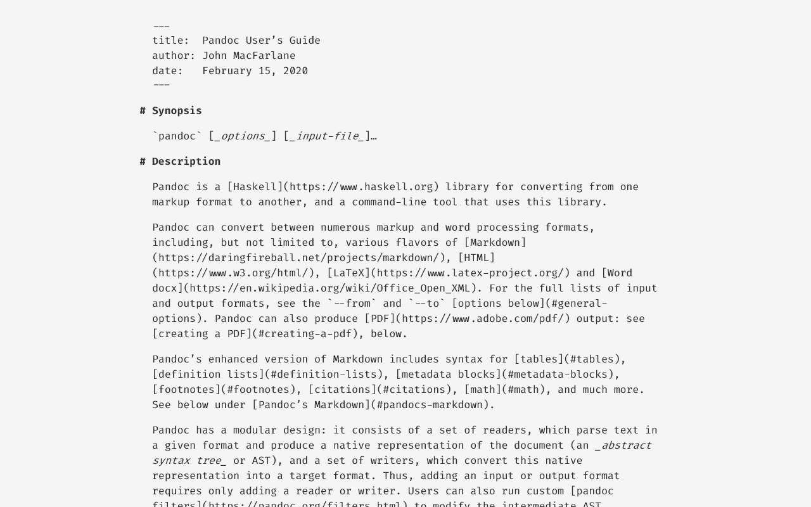
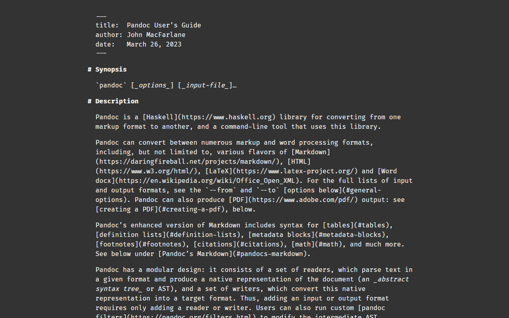

markdown-css
A CSS stylesheet support almost all Markdown syntax, like headings,
lists, tables, blockquotes, footnotes etc.
This is a project inspired by markdown-css. I
extend the original Markdown stylesheet.
Support many Markdown
features
Light Mode:

Screenshot: Pandoc Manual
Dark Mode:

Screenshot: Pandoc Manual
It support Pandoc Markdown syntax, include:
- Title block, YAML style
- Headings like FoldingText,
aligned with chapter text instead of
#
- Bullet lists
- Ordered lists
- Definition lists
- The four-space rule
- Links
- Tables
- Blockquotes
- Code (blocks)
- Emphasis
- Horizontal rules
- Footnotes
You can see the example below:
Pandoc Manual HTML Version
and original
source.